All eight characters from your Bosses and Elites sheets, each with 3+ passes judged side by side in both orders. Heads now follow the concept proportions, no bobbleheads. Three bosses are rebuilt in place (top strip: before, then after); Gorr and the four elites are new and are shown beside their nearest relative. The new ones do not spawn yet. Nothing else changed: other monsters and the player heroes render exactly as before.
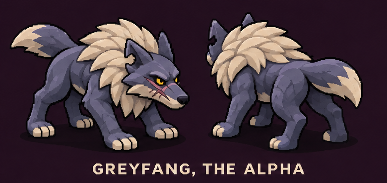
Rebuilt: blue-grey coat (reads on dark floors), big spiky cream mane over neck, shoulders and chest, yellow eyes, red scar, leaner longer legs, cream toes and tail tip. Weak spot: the mane hides the ears from the front.
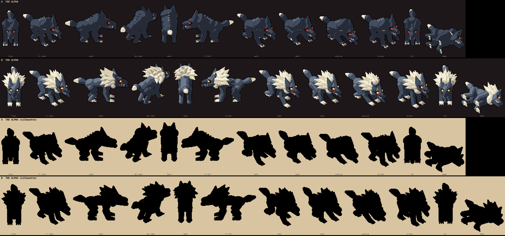
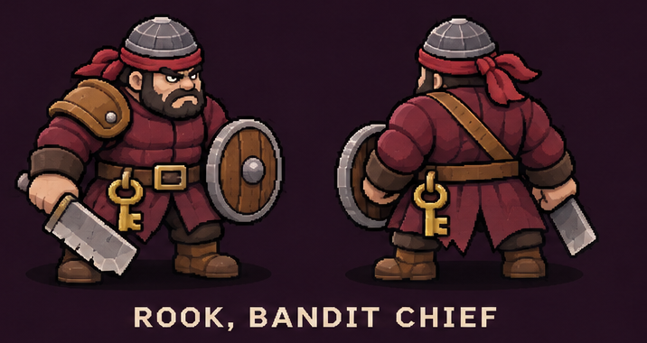
Rebuilt: steel cap with a red bandana knotted at the side, scowling bearded face, stocky build, quilted red coat to the knees, leather pauldron, belt with a brass key, broad cleaver, planked round shield. Horned helm, spikes and axe gone.
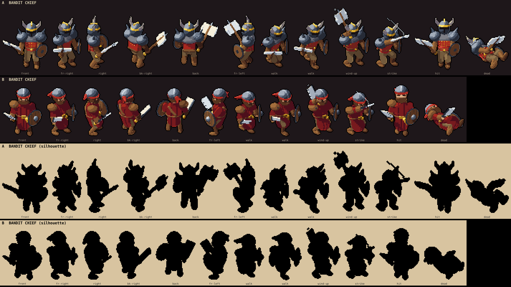
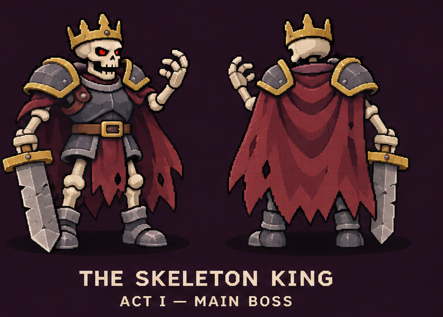
Rebuilt: normal-size skull (was 1.4x), modest gold crown, plate breastplate with gold buckle, layered gold-trimmed pauldrons, tattered dark crimson cape gathered at the neck, broad chipped sword held low, clawed hand raised.
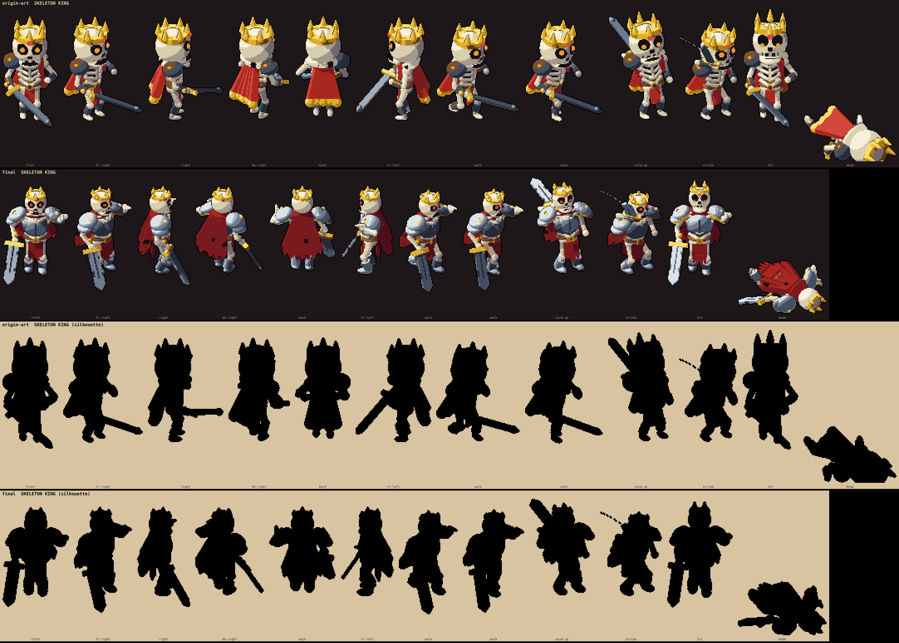
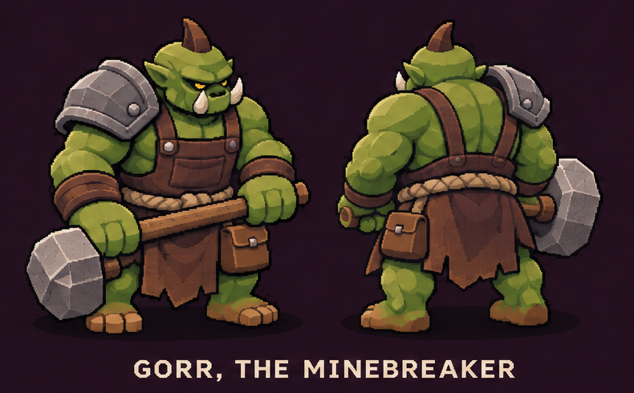
New boss (shown under the Warlord for scale): steel pauldrons, leather overalls with braces crossing at the back, rope belt, ragged apron, hip pouch, faceted stone sledgehammer with an overhead two-handed slam.
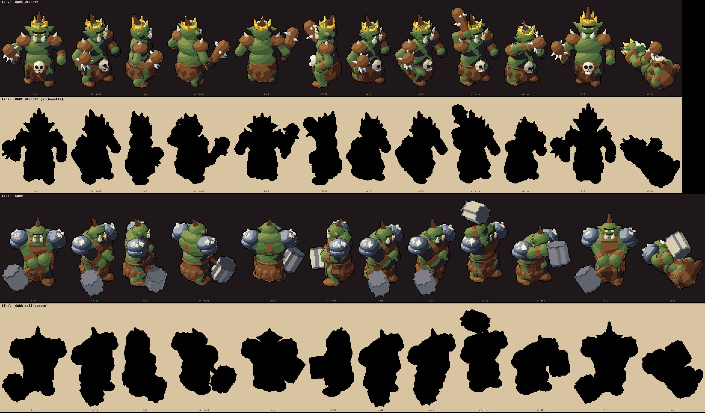
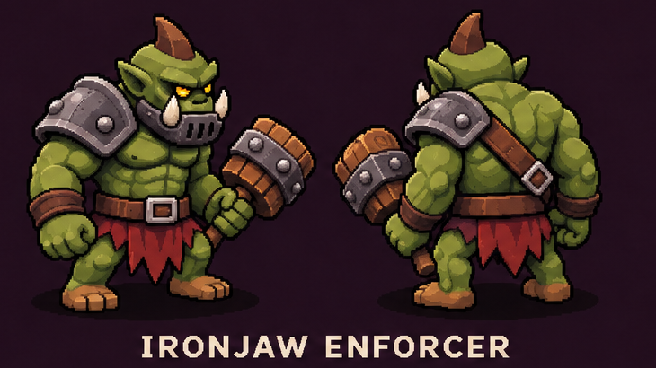
New (shown under the regular Enforcer): iron jaw grille with tusks poking past it, riveted steel pauldron, cross strap, big buckle, short torn red skirt, iron-banded wooden mallet.
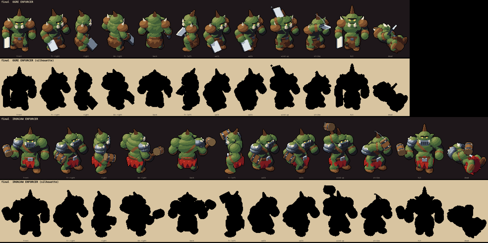
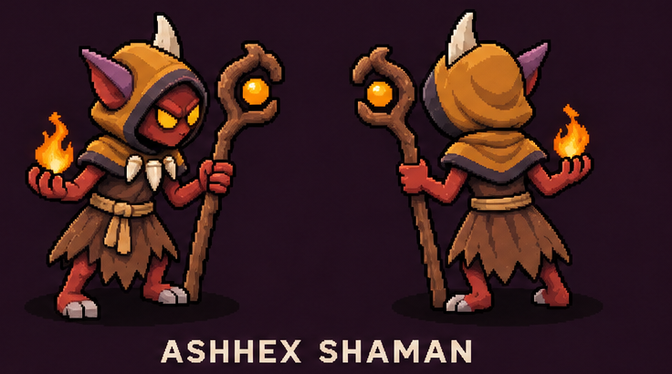
New (shown under the Fallen Shaman): orange hood and mantle, tall white horns, bone-fang necklace, taller orb staff, flame in hand; smaller head than the Shaman's.
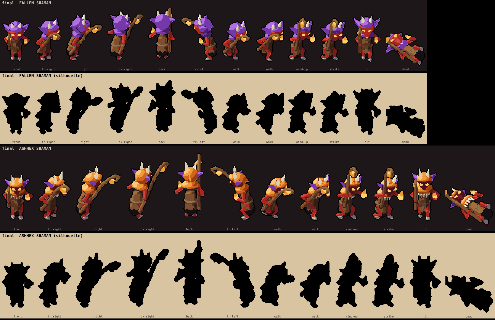
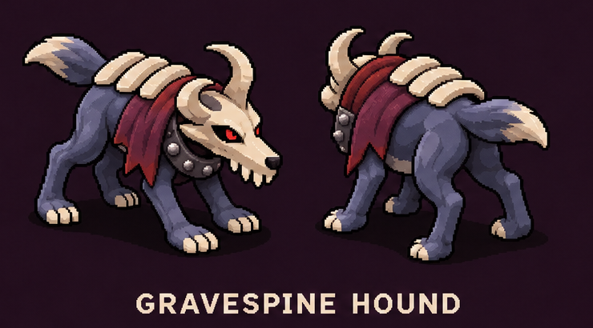
New (shown above the Bone Hound): horned skull mask with red eyes, tall curled bone plates down the spine, ragged dark red cloth, studded iron collar.
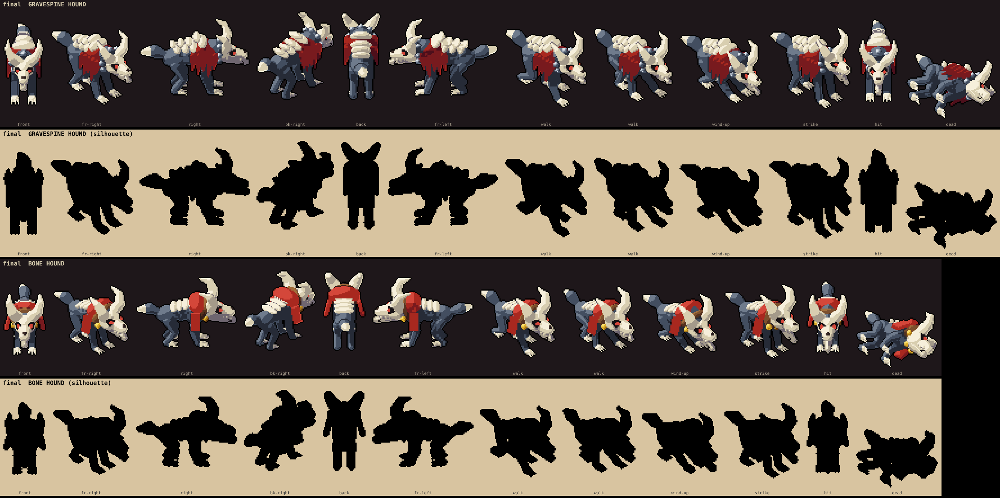
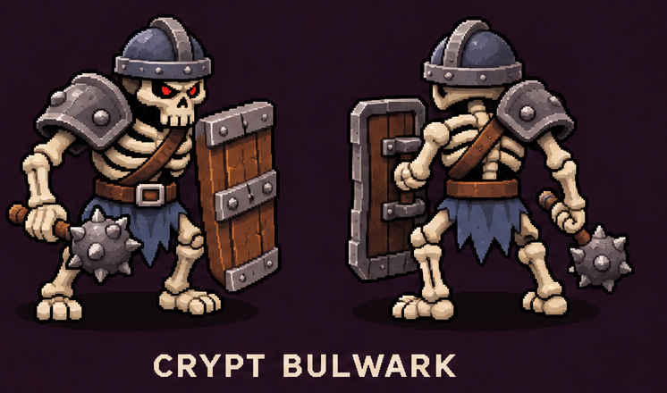
New (shown above the Tomb Guard): blued-steel kettle helm with an iron brim, steel pauldrons, cross strap, bare-wood tower shield with iron bands, spiked mace, blue loincloth, 15% bigger.
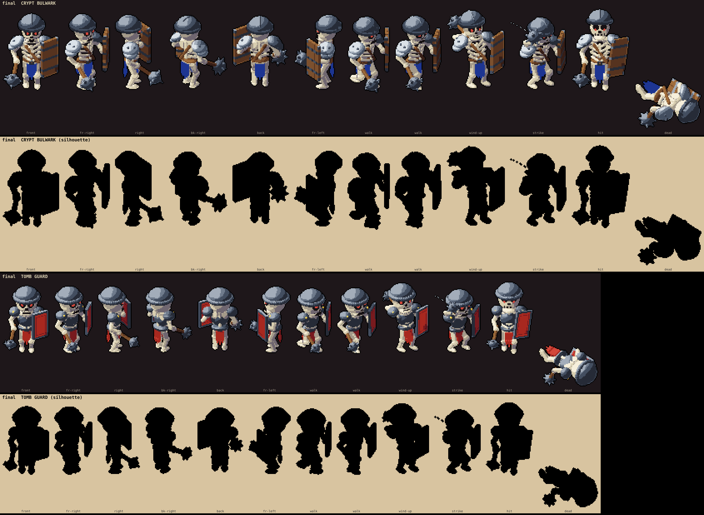